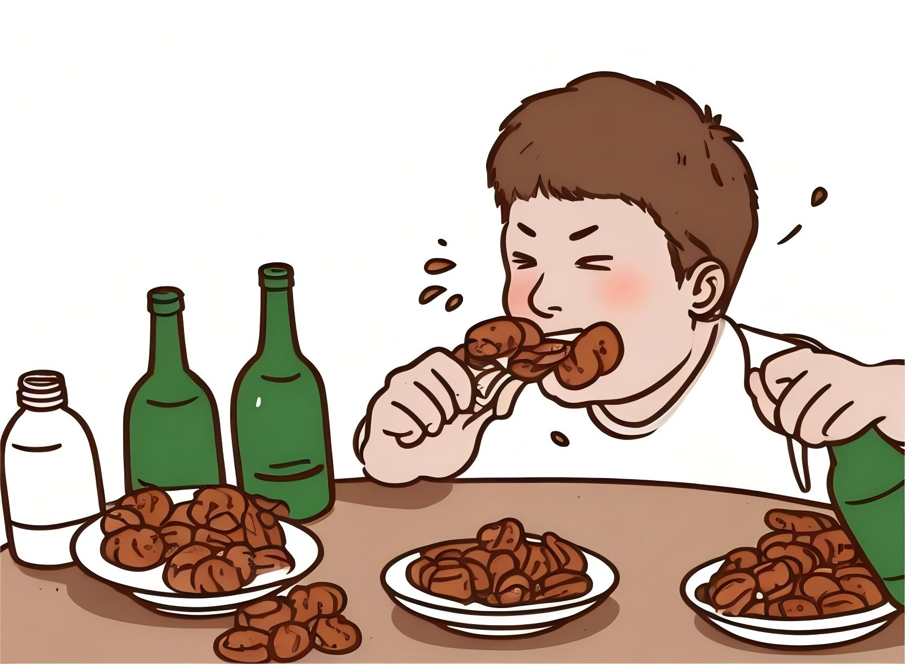

神经性贪食症
神经性贪食症（bulimia nervosa，台湾作心因性暴食症，简称暴食症），是一种进食障碍。
与普通吃多、吃撑不同，贪食症特征是患者会尝试在暴饮暴食后试图进行净空行为，例如呕吐、服食泻药、利尿剂、兴奋剂等，或持续禁食、过度运动来努力减重。
病患特征
病患会在四下无人时疯狂的吃下许多食物，接着心理产生罪恶感而去催吐（或服用泻药），催吐完会暂时纾解心中罪恶感。 但是病患随即会感到“催吐这种行为是可耻的”而产生焦虑，导致病患会以“吃下大量食物”来纾解焦虑。这是一个无穷的循环。
通常患者吃下来的食物每次总热量高达10000~15000 Kcal，通常是一些速食、高热量食物。 由于患者会在四下无人情况下进行这些行为，所以临床上要检查出来非常的困难，通常必须由好友、家人发现， 另外牙医师检查牙齿时，亦可由牙齿珐琅质的改变诊断出患者。另外这些患者会有过度运动情形。
分布特征
女性的神经性贪食发病率约为男性的9倍，其中年轻妇女患病率最高：
多为成年的年轻女性，通常天生身材就稍微胖一点，或者根本就是标准体重，且在青少年时期（国、高中阶段）曾多次尝试减重。这些患者通常与家人相处状况也不是很好。
BN可以是处理上述过程中所遇到的应激事件的一种方式。BN患者较AN患者更善于交际、更愤怒和更冲动，缺少和AN患者相当的超我控制和自我力量。
病因探究
涉及遗传学、心理学和生物学等多方面
如果近亲有神经性贪食症状，其家族内较普遍有其他神经性贪食患者；遗传导致神经性贪食的风险比例约为30%至80%；不过，有资料表明BN的遗传倾向不如AN明显。
BN的发病与心理和人格因素有关，如完美主义、自我概念损害、情感不稳定、冲动控制能力差，对发育和成熟过程适应能力较差，包括对青春期、婚姻、妊娠以及与家庭成员和父母的关系问题、遇到的性问题等。
生活环境中若有家长担心体重的状况或推广节食的文化价值观，也有风险导致罹患神经性贪食。工业化导致社会能够生产充足的食物，并将之作快食简装处理，这种诱惑与女性“苗条”的审美观之间发生了矛盾；
社会的发展也导致了男女角色的改变，女性对自己体型的关注直接与个人的自尊、自我价值感有关；某些社会观点，如，越苗条的女性就越有魅力，节食、苗条促进成功，使得女性对于自己的体型异常敏感。
患者数量逐年增加，值得警惕！
神经性贪食症在很大程度上都是由于人们生活的压力或焦虑造成的。一般来说，性格上较软弱，比较看重外界评价的人得贪食症的可能性更大一些； 从性别上，女性得的机率也比男性大了很多。其实吃东西在常人看来是很正常的，但过度的饮食则变成了一种病。 这些人很容易用其他人看来很平常的事物来排解自己的焦虑，有时候他们甚至自己也不知道为什么自己只要不开心的时候就必须要吃东西或者SHOPPING。 实际上他们的这种行为只是为了达到忽略自己当前压力而采取的一种方式。